ภาพรวมบทนี้ Chapter 01 บอกว่าคอมพิวเตอร์มีส่วนประกอบอะไร บทนี้เจาะว่า ส่วนประกอบเหล่านั้นทำงานร่วมกันอย่างไร
เริ่มจากโมเดลคอมพิวเตอร์ Von Neumann vs Harvard, bus และการแย่งใช้ bus, แนวคิด hardware vs software programming, register สำคัญ (MAR, MBR, PC, IR, AC) แล้วดู instruction cycle ผ่านตัวอย่างจริง
ครึ่งหลังใช้เครื่องจำลอง MARIE อธิบาย ISA, instruction format, RTL และปิดด้วยเรื่อง interrupt (ชนิด, การทำงาน, maskable, multiple interrupts)
1. Von Neumann vs Harvard Computer Model ⭐
1.1 Von Neumann Computer Model
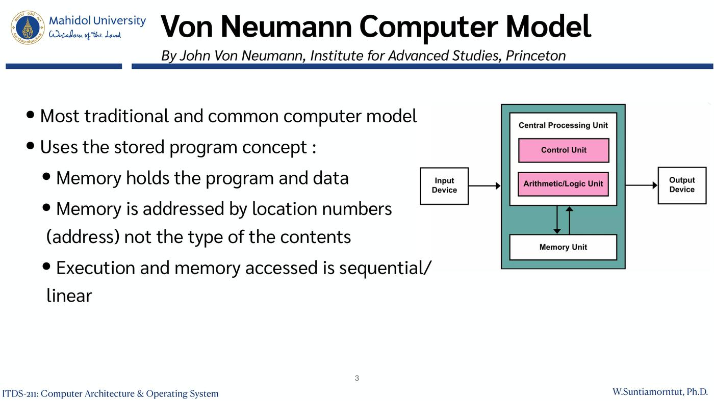
โดย John Von Neumann, Institute for Advanced Studies, Princeton
- โมเดลคอมพิวเตอร์ที่ดั้งเดิมและพบมากที่สุด
- ใช้แนวคิด stored program concept:
- Memory เก็บทั้ง program และ data ไว้ด้วยกัน
- Memory ถูกอ้างถึงด้วย หมายเลขตำแหน่ง (address) ไม่ใช่ตามชนิดของข้อมูล ที่เก็บ
- การทำงานและการเข้าถึง memory เป็นแบบลำดับ (sequential/linear)
- ภาพ: Input Device → CPU (Control Unit + Arithmetic/Logic Unit) ⇄ Memory Unit → Output Device
1.2 Harvard Computer Model
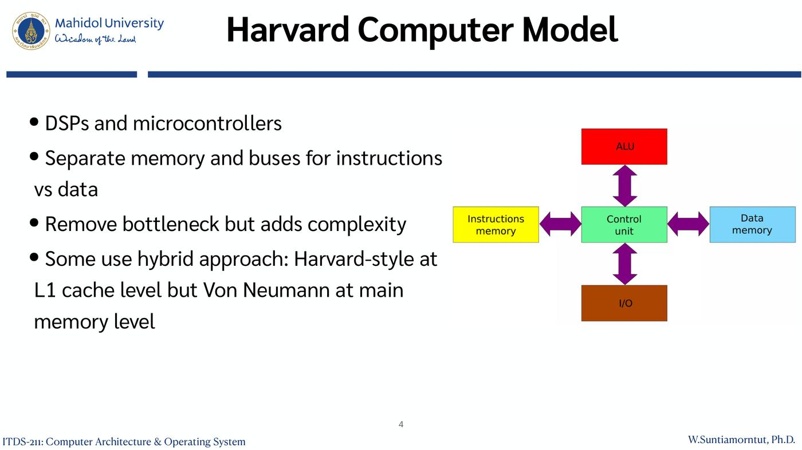
- ใช้ใน DSPs (Digital Signal Processors) และ microcontrollers
- แยก memory และ bus สำหรับ instructions กับ data
- ลดคอขวด (bottleneck) แต่ เพิ่มความซับซ้อน
- บางระบบใช้ แบบผสม (hybrid): แบบ Harvard ที่ระดับ L1 cache แต่ Von Neumann ที่ระดับ main memory
- ภาพ: Control unit อยู่ตรงกลาง เชื่อมกับ ALU, Instructions memory, Data memory, I/O
| Von Neumann | Harvard | |
|---|---|---|
| Memory | ร่วมกัน program + data | แยก instruction memory กับ data memory |
| Bus | ชุดเดียว | แยกกัน |
| ข้อดี | เรียบง่าย ยืดหยุ่น | ไม่มีคอขวด ดึงคำสั่งและข้อมูลพร้อมกันได้ |
| ข้อเสีย | คอขวด (Von Neumann bottleneck) เพราะคำสั่งกับข้อมูลต้องผ่านทางเดียว | ซับซ้อนกว่า |
| ใช้ที่ | คอมพิวเตอร์ทั่วไป | DSP, microcontroller, L1 cache |
💡 Von Neumann = ถนนเลนเดียวที่ทั้งรถส่งคำสั่งและรถส่งข้อมูลต้องใช้ร่วมกัน / Harvard = แยกเป็นสองถนน รถไม่ต้องรอกัน
2. Bus
2.1 ประเภทและองค์ประกอบของ Bus
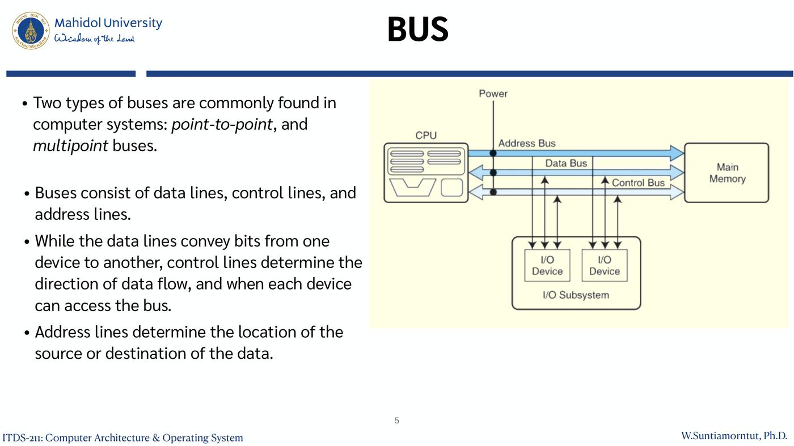
- bus ที่พบบ่อยมี 2 แบบ: point-to-point (เชื่อม 2 อุปกรณ์) และ multipoint (หลายอุปกรณ์ใช้ร่วม)
- bus ประกอบด้วย 3 สาย:
| สาย | หน้าที่ |
|---|---|
| Data lines | ส่งบิตข้อมูล จากอุปกรณ์หนึ่งไปอีกอุปกรณ์ |
| Control lines | กำหนด ทิศทางการไหลของข้อมูล และ เมื่อไหร่ แต่ละอุปกรณ์เข้าใช้ bus ได้ |
| Address lines | กำหนด ตำแหน่งต้นทางหรือปลายทาง ของข้อมูล |
2.2 Multipoint Bus
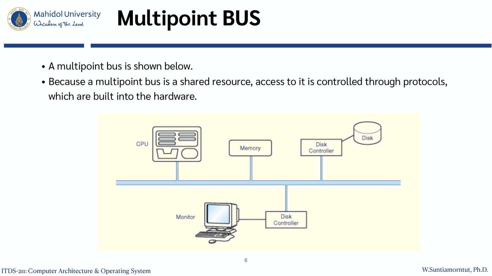
- multipoint bus เป็น ทรัพยากรที่ใช้ร่วมกัน (shared resource)
- การเข้าใช้จึงถูกควบคุมด้วย protocol ที่สร้างไว้ในฮาร์ดแวร์
2.3 Bus Arbitration
- ในแบบ master-slave ที่มี bus master ได้หลายตัว ถ้าขอใช้พร้อมกันต้องมีการ ตัดสิน (arbitrate)
- 4 แบบของ bus arbitration:
| แบบ | วิธีทำงาน |
|---|---|
| Daisy chain | ส่งต่อสิทธิ์ จากอุปกรณ์ priority สูงสุดไปต่ำสุด |
| Centralized parallel | แต่ละอุปกรณ์ ต่อตรงกับวงจรตัดสิน (arbitration circuit) |
| Distributed using self-detection | อุปกรณ์ ตกลงกันเอง ว่าใครได้ bus |
| Distributed using collision-detection | ใครจะใช้ก็ ลองส่งได้เลย ถ้าข้อมูลชนกับอุปกรณ์อื่นก็ ลองใหม่ |
💡 daisy chain เหมือนส่งไมค์ตามแถว คนต้นแถว (priority สูง) ได้ก่อน / collision-detection เหมือนคุยในวงแล้วถ้าพูดชนกันก็หยุดแล้วเริ่มใหม่ (คล้าย CSMA/CD ของ Ethernet)
3. Hardware and Software Approaches
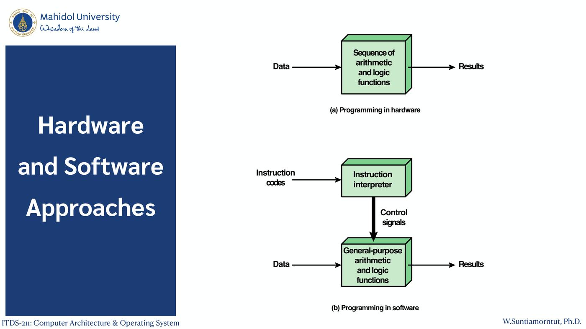
| (a) Programming in hardware | (b) Programming in software |
|---|---|
| Data → Sequence of arithmetic and logic functions (วงจรเฉพาะ) → Results | Instruction codes → Instruction interpreter → Control signals → General-purpose arithmetic and logic functions ← Data → Results |
| ถ้าจะเปลี่ยนงาน ต้อง เดินสายใหม่ (rewire) | เปลี่ยนงานแค่ เปลี่ยนชุดคำสั่ง |
Software
- คือ ลำดับของ code หรือ instructions
- ส่วนหนึ่งของฮาร์ดแวร์แปลแต่ละคำสั่ง แล้ว สร้าง control signals
- โปรแกรมใหม่ = ป้อนลำดับ code ใหม่ แทนการเดินสายฮาร์ดแวร์ใหม่
Major components
- CPU = instruction interpreter + module ของ arithmetic and logic functions แบบอเนกประสงค์
- I/O components
- มีส่วนประกอบพื้นฐานสำหรับ รับข้อมูลและคำสั่ง แล้ว แปลงเป็นสัญญาณ ที่ระบบใช้ได้
- มี ช่องทางรายงานผลลัพธ์
💡 นี่คือหัวใจของคอมพิวเตอร์อเนกประสงค์: ฮาร์ดแวร์ชุดเดียว ทำงานได้หลายอย่างเพราะเปลี่ยน software ได้ (เหมือนเครื่องเล่นเพลงที่เปลี่ยนแผ่นได้ แทนการสร้างเครื่องใหม่ทุกเพลง)
4. Registers สำหรับ Memory และ I/O ⭐
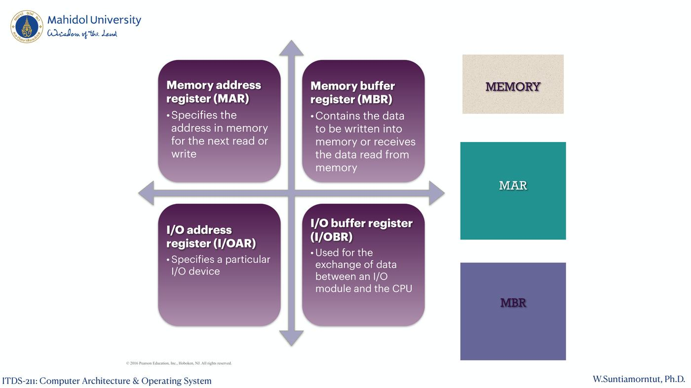
| Register | หน้าที่ |
|---|---|
| Memory Address Register (MAR) | ระบุ address ใน memory สำหรับการอ่านหรือเขียนครั้งถัดไป |
| Memory Buffer Register (MBR) | เก็บข้อมูลที่จะเขียนลง memory หรือ รับข้อมูลที่อ่านจาก memory |
| I/O Address Register (I/OAR) | ระบุอุปกรณ์ I/O ตัวที่ต้องการ |
| I/O Buffer Register (I/OBR) | ใช้ แลกเปลี่ยนข้อมูล ระหว่าง I/O module กับ CPU |
⚠️ MAR = "ที่ไหน" (address) / MBR = "อะไร" (ข้อมูล) — จับคู่ให้ถูก
Computer components: Top-level view
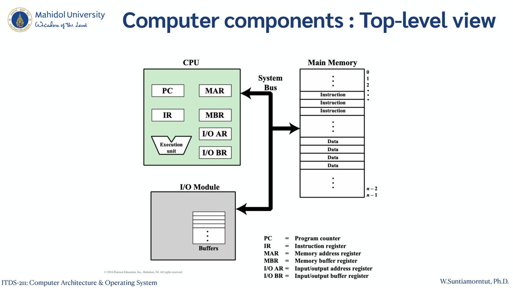
- CPU มี PC, IR, MAR, MBR, I/O AR, I/O BR และ Execution unit
- Main Memory (address 0 ถึง n−1) เก็บทั้ง Instruction และ Data
- I/O Module มี Buffers
- ทั้งหมดเชื่อมผ่าน System Bus
5. Computer Function: Instruction Cycle
5.1 Basic Instruction Cycle
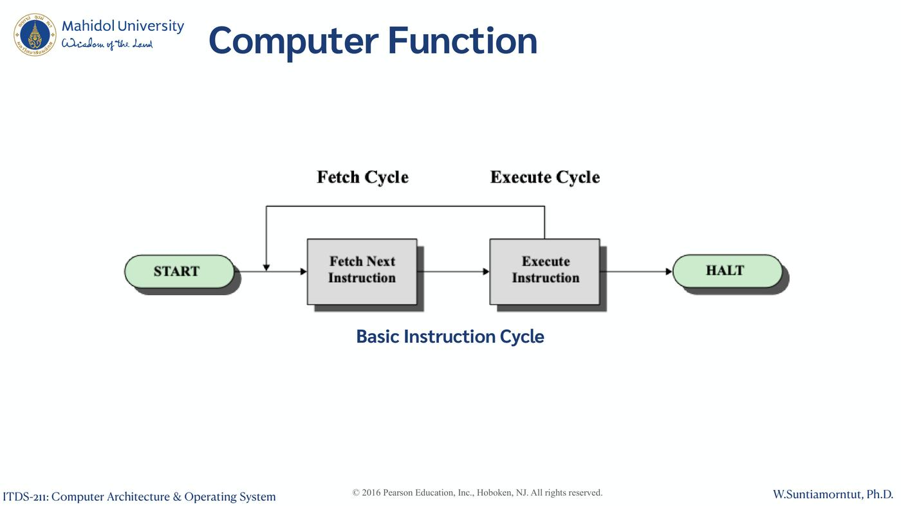
START → Fetch Next Instruction (Fetch Cycle) → Execute Instruction (Execute Cycle) → วนกลับ … → HALT
5.2 Fetch Cycle
- ตอนเริ่มแต่ละ instruction cycle processor ดึงคำสั่ง จาก memory
- PC เก็บ address ของคำสั่งที่จะดึงถัดไป
- processor เพิ่มค่า PC หลังดึงคำสั่งแต่ละครั้ง เพื่อดึงคำสั่งถัดไปตามลำดับ
- คำสั่งที่ดึงมา ถูกโหลดลง IR
- processor แปลความหมายคำสั่ง แล้ว ทำตามที่ต้องการ
6. Example of Program Execution ⭐
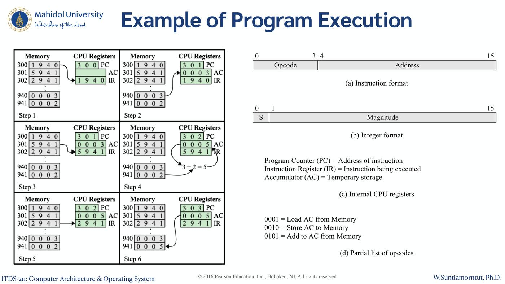
6.1 รูปแบบข้อมูล (เครื่องสมมติ 16 บิต)
| ส่วน | รายละเอียด |
|---|---|
| (a) Instruction format | บิต 0–3 = Opcode (4 บิต), บิต 4–15 = Address (12 บิต) |
| (b) Integer format | บิต 0 = S (เครื่องหมาย), บิต 1–15 = Magnitude |
| (c) Internal CPU registers | PC = address ของคำสั่ง, IR = คำสั่งที่กำลังรัน, AC (Accumulator) = ที่เก็บชั่วคราว |
| (d) Partial list of opcodes | 0001 = Load AC from Memory, 0010 = Store AC to Memory, 0101 = Add to AC from Memory |
6.2 โปรแกรมใน memory (เลขฐาน 16)
| Address | Content | ความหมาย |
|---|---|---|
| 300 | 1940 | opcode 1 = Load AC จาก address 940 |
| 301 | 5941 | opcode 5 = Add ค่าที่ address 941 เข้า AC |
| 302 | 2941 | opcode 2 = Store AC ไปที่ address 941 |
| 940 | 0003 | ข้อมูล = 3 |
| 941 | 0002 | ข้อมูล = 2 |
6.3 ทีละขั้น
| Step | ทำอะไร | PC | AC | IR |
|---|---|---|---|---|
| 1 | Fetch คำสั่งที่ 300 → IR = 1940, PC เพิ่มเป็น 301 | 301 | – | 1940 |
| 2 | Execute Load: โหลดค่าที่ 940 (0003) ลง AC | 301 | 0003 | 1940 |
| 3 | Fetch คำสั่งที่ 301 → IR = 5941, PC = 302 | 302 | 0003 | 5941 |
| 4 | Execute Add: 3 + 2 = 5 → AC = 0005 | 302 | 0005 | 5941 |
| 5 | Fetch คำสั่งที่ 302 → IR = 2941, PC = 303 | 303 | 0005 | 2941 |
| 6 | Execute Store: เขียน AC (0005) ลง address 941 | 303 | 0005 | 2941 |
ผลลัพธ์: memory ที่ 941 เปลี่ยนจาก 0002 เป็น 0005 (คือ 3 + 2)
💡 สังเกตรูปแบบ: ทุกคำสั่ง = 1 fetch + 1 execute และ PC จะเพิ่มขึ้นตอน fetch เสมอ
7. Instruction Cycle State Diagram
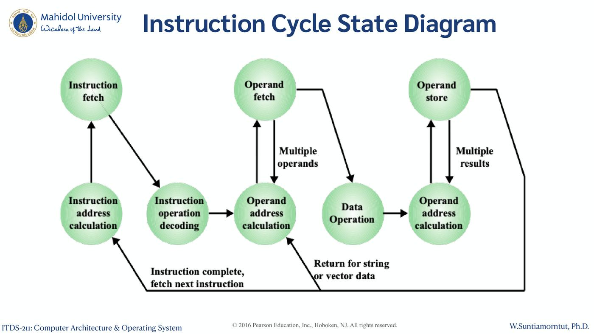
| State | ความหมาย (คำอธิบายเสริม) |
|---|---|
| Instruction address calculation | หา address ของคำสั่งถัดไป (ปกติ PC + 1) |
| Instruction fetch | อ่านคำสั่งจาก memory |
| Instruction operation decoding | ถอดรหัสว่าจะทำอะไรและใช้ operand อะไร |
| Operand address calculation | หา address ของ operand |
| Operand fetch | ดึง operand มา (มีหลาย operand ได้ – "Multiple operands") |
| Data operation | ทำ operation |
| Operand store | เก็บผลลัพธ์ (มีหลายผลได้ – "Multiple results") |
- ลูกศร "Return for string or vector data" = ถ้าเป็นข้อมูลชุด วนทำซ้ำ
- ลูกศร "Instruction complete, fetch next instruction" = จบคำสั่ง วนไปคำสั่งถัดไป
- ⚠️ ในภาพ แถวบน (instruction fetch, operand fetch, operand store) คือ state ที่ ต้องติดต่อ memory/I/O ส่วน แถวล่าง คือ state ที่ ทำภายใน CPU (ตามตำรา Stallings)
8. MARIE (Simple Computer Function)
MARIE (Machine Architecture that is Really Intuitive and Easy) คือ คอมพิวเตอร์จำลองแบบง่าย ใช้สอนหลักการ (ชื่อเต็มเสริม)
8.1 MARIE's seven registers
| Register | ขนาด | หน้าที่ |
|---|---|---|
| Accumulator (AC) | 16-bit | เก็บ conditional operator (เช่น "less than") หรือ operand หนึ่งของคำสั่งแบบ 2 operand |
| Memory address register (MAR) | 12-bit | เก็บ memory address ของคำสั่งหรือ operand |
| Memory buffer register (MBR) | 16-bit | เก็บ ข้อมูลหลังดึงจาก หรือ ก่อนวางลง memory |
| Program counter (PC) | 12-bit | เก็บ address ของคำสั่งถัดไป |
| Instruction register (IR) | (16-bit) | เก็บ คำสั่งก่อนถูกรัน |
| Input register (InREG) | 8-bit | เก็บ ข้อมูลที่อ่านจาก input device |
| Output register (OutREG) | 8-bit | เก็บ ข้อมูลที่พร้อมส่งไป output device |
💡 ทำไม MAR และ PC เป็น 12 บิต? เพราะ memory มี 2¹² = 4096 ช่อง (address 0–4095) ส่วน AC, MBR เป็น 16 บิตเพราะเก็บข้อมูลเต็ม word (คำอธิบายเสริม)
8.2 MARIE Architecture
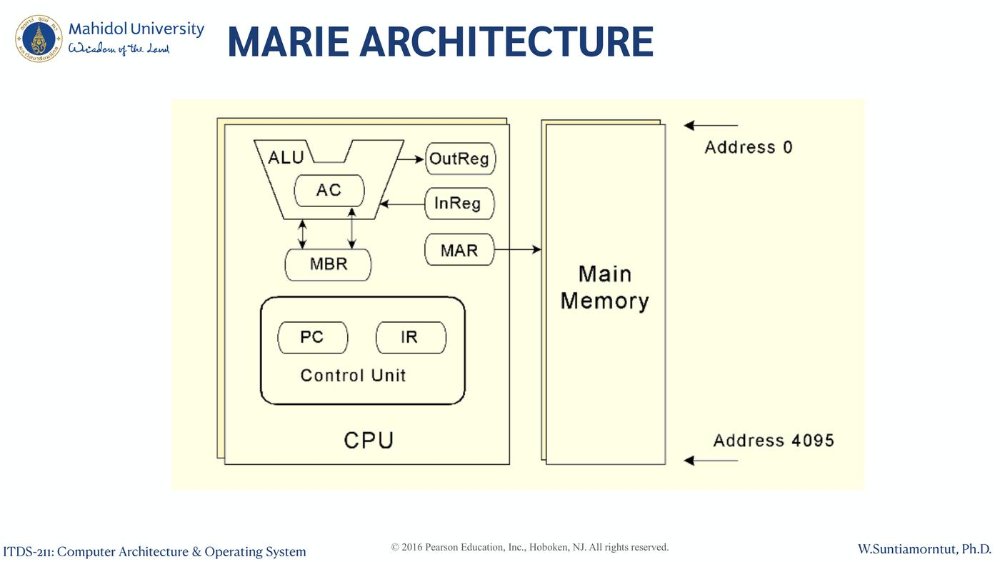
- CPU มี ALU, AC, MBR, MAR, InReg, OutReg และ Control Unit (PC, IR)
- Main Memory address 0 ถึง 4095
8.3 การเชื่อมต่อใน MARIE
- register ต่าง ๆ เชื่อมกันและเชื่อมกับ main memory ผ่าน common data bus
- อุปกรณ์แต่ละตัวบน bus มีหมายเลขเฉพาะ ที่ถูกตั้งบน control lines เมื่อต้องการให้อุปกรณ์นั้นทำงาน
- มี ทางเชื่อมแยก ระหว่าง AC กับ MBR และระหว่าง ALU กับ AC และ MBR
- ทำให้ ส่งข้อมูลระหว่างอุปกรณ์เหล่านี้ได้โดยไม่ต้องใช้ main data bus
8.4 MARIE Data Path
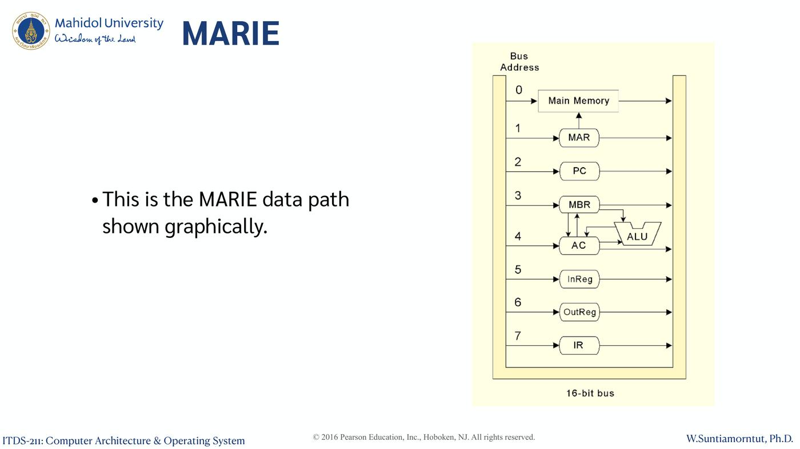
16-bit bus แต่ละอุปกรณ์มี bus address:
| Bus address | อุปกรณ์ |
|---|---|
| 0 | Main Memory |
| 1 | MAR |
| 2 | PC |
| 3 | MBR |
| 4 | AC (เชื่อม ALU) |
| 5 | InReg |
| 6 | OutReg |
| 7 | IR |
9. MARIE ISA และ Instruction Format ⭐
9.1 Instruction Set Architecture (ISA)
- ISA กำหนดรูปแบบของคำสั่ง และ operation พื้นฐาน ที่เครื่องทำได้
- ISA คือ ส่วนติดต่อ (interface) ระหว่าง hardware กับ software
- บาง ISA มี หลายร้อยคำสั่ง
- MARIE ISA มีแค่ 13 คำสั่ง
9.2 Instruction Format
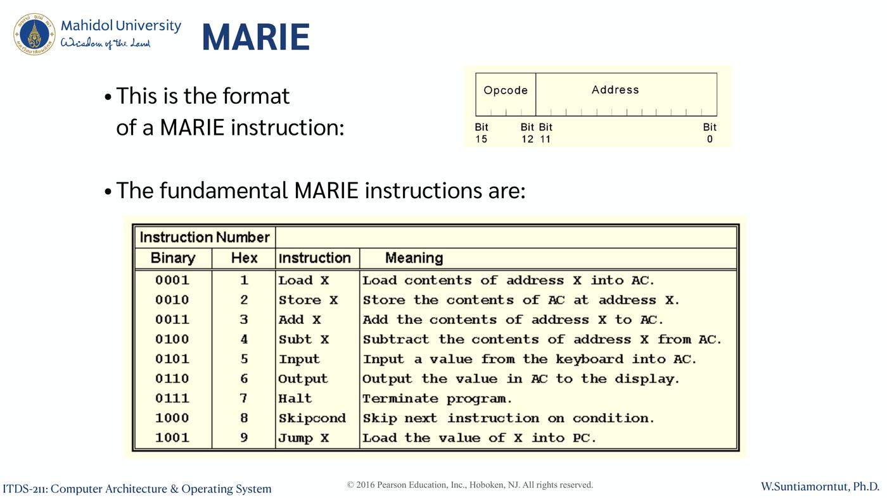
| บิต 15–12 | บิต 11–0 |
|---|---|
| Opcode (4 บิต) | Address (12 บิต) |
9.3 The fundamental MARIE instructions
| Binary | Hex | Instruction | Meaning |
|---|---|---|---|
| 0001 | 1 | Load X | โหลดค่าที่ address X ลง AC |
| 0010 | 2 | Store X | เก็บค่าใน AC ไปที่ address X |
| 0011 | 3 | Add X | บวกค่าที่ address X เข้า AC |
| 0100 | 4 | Subt X | ลบค่าที่ address X ออกจาก AC |
| 0101 | 5 | Input | รับค่าจาก keyboard ลง AC |
| 0110 | 6 | Output | แสดงค่าใน AC ออกจอ |
| 0111 | 7 | Halt | จบโปรแกรม |
| 1000 | 8 | Skipcond | ข้ามคำสั่งถัดไปตามเงื่อนไข |
| 1001 | 9 | Jump X | โหลดค่า X ลง PC (กระโดดไป X) |
⚠️ ตารางในสไลด์แสดง 9 คำสั่งพื้นฐาน แต่ MARIE ISA ทั้งหมดมี 13 คำสั่ง (อีก 4 คำสั่งคือ JnS, Clear, AddI, JumpI ตามตำรา Null & Lobur — เสริม)
9.4 ตัวอย่าง bit pattern ใน IR
LOAD
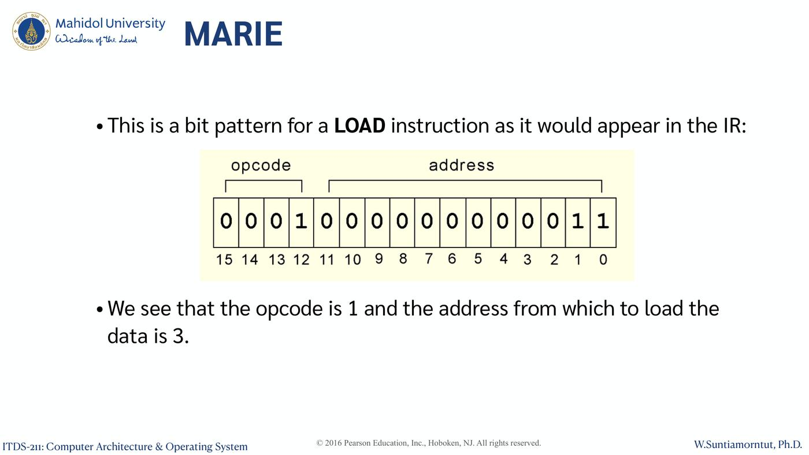
0001 000000000011 → opcode = 1 (Load), address = 3 → โหลดค่าจาก address 3
SKIPCOND
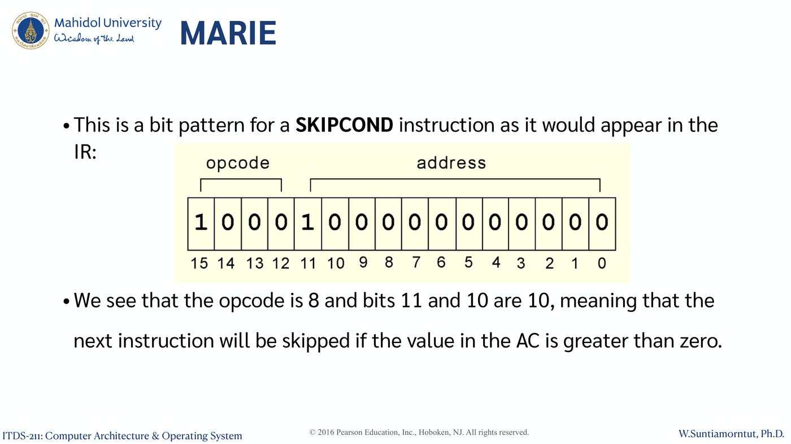
1000 100000000000 → opcode = 8 (Skipcond), บิต 11–10 = 10 → ข้ามคำสั่งถัดไปถ้า AC > 0
10. RTL (Register Transfer Language) ⭐
- แต่ละคำสั่งประกอบด้วย คำสั่งย่อยหลายขั้น เรียกว่า microoperations
- ลำดับ microoperation ที่แน่นอนของแต่ละคำสั่ง ระบุได้ด้วย Register Transfer Language (RTL)
- สัญลักษณ์ใน MARIE RTL:
- M[X] = ค่าข้อมูลที่เก็บอยู่ใน memory ตำแหน่ง X
- ← = การโอนข้อมูลไปยัง register หรือ memory
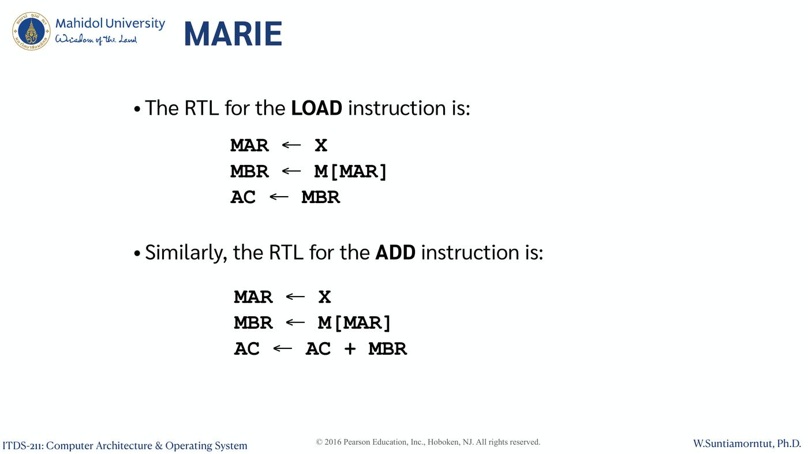
| LOAD X | ADD X |
|---|---|
MAR ← X |
MAR ← X |
MBR ← M[MAR] |
MBR ← M[MAR] |
AC ← MBR |
AC ← AC + MBR |
อ่าน LOAD: (1) ใส่ address X ลง MAR (2) อ่านค่าที่ตำแหน่งนั้นลง MBR (3) คัดลอก MBR ไปที่ AC ADD ต่างแค่บรรทัดสุดท้าย: เอาไปบวกกับ AC แทนการแทนที่
RTL ของ SKIPCOND (ซับซ้อนที่สุดในชุดคำสั่ง)
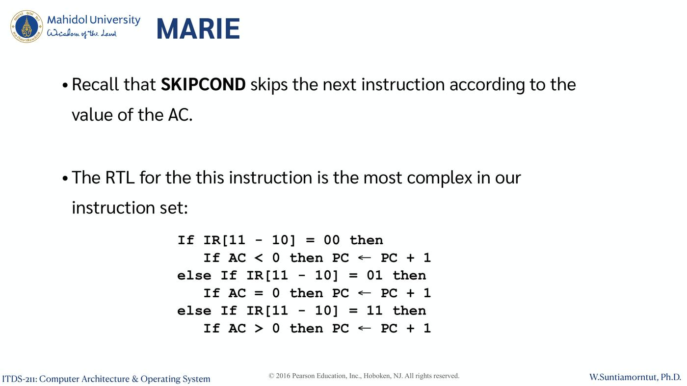
If IR[11 - 10] = 00 then
If AC < 0 then PC ← PC + 1
else If IR[11 - 10] = 01 then
If AC = 0 then PC ← PC + 1
else If IR[11 - 10] = 11 then
If AC > 0 then PC ← PC + 1
| IR[11–10] | ข้ามเมื่อ |
|---|---|
| 00 | AC < 0 |
| 01 | AC = 0 |
| 11 (ในสไลด์นี้) | AC > 0 |
- "ข้าม" = PC ← PC + 1 เพราะ PC ชี้คำสั่งถัดไปอยู่แล้ว บวกอีก 1 จึงข้ามไปหนึ่งคำสั่ง
⚠️ สไลด์ไม่ตรงกันเอง: หน้า SKIPCOND bit pattern บอกว่า บิต 11–10 = 10 หมายถึง AC > 0 แต่หน้า RTL เขียน 11 สำหรับ AC > 0 (ในตำรา MARIE มาตรฐานใช้ 10 แทน AC > 0) ควรถามอาจารย์ว่าข้อสอบยึดแบบไหน
11. Instruction Processing (Fetch-Decode-Execute)
- fetch-decode-execute cycle คือลำดับขั้นที่คอมพิวเตอร์ทำเมื่อรันโปรแกรม
- Fetch: ดึงคำสั่งจาก memory มาไว้ใน IR
- Decode: ถอดรหัสใน IR ว่าต้องทำอะไรต่อ
- ถ้าต้องใช้ ค่าจาก memory (operand) ให้ดึงมาไว้ใน MBR
- เมื่อทุกอย่างพร้อม Execute
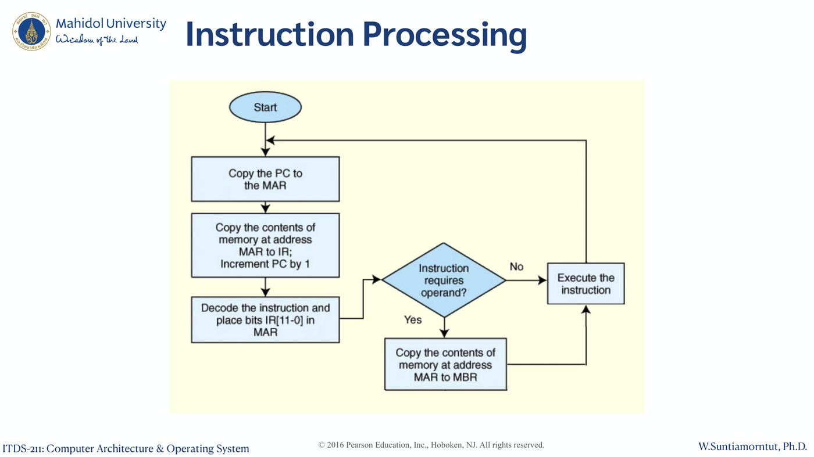
Flowchart:
- Start → Copy the PC to the MAR
- Copy the contents of memory at address MAR to IR; Increment PC by 1
- Decode the instruction and place bits IR[11-0] in MAR
- Instruction requires operand?
- Yes → Copy the contents of memory at address MAR to MBR → Execute
- No → Execute
- Execute the instruction → กลับไปข้อ 1
เขียนเป็น RTL: MAR ← PC → IR ← M[MAR], PC ← PC + 1 → MAR ← IR[11-0] → (ถ้าต้องการ) MBR ← M[MAR] → execute
12. Interrupts ⭐
12.1 Interrupt คืออะไร และเกิดเมื่อไหร่
- คอมพิวเตอร์ทุกเครื่องมีวิธีขัดจังหวะ fetch-decode-execute cycle
- Interrupt เกิดเมื่อ:
- ผู้ใช้กด user break (เช่น Control + C)
- ผู้ใช้หรือโปรแกรมขอ I/O
- เกิด critical error
- แหล่งที่มา:
- Hardware interrupt
- Software interrupt (software เรียกใช้งาน OS system call)
💡 เชื่อมกับ Lecture 2 (OS): system call ใช้ trap ซึ่งก็คือ software interrupt ส่วน timer interrupt เป็น hardware interrupt
12.2 เพิ่มขั้น interrupt ในวงจร
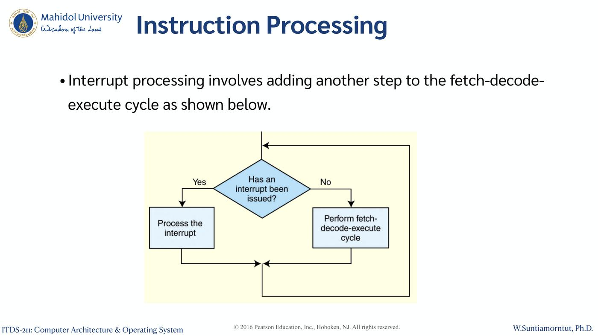
ก่อนเริ่มแต่ละรอบ ถาม "Has an interrupt been issued?"
- Yes → Process the interrupt
- No → Perform fetch-decode-execute cycle
12.3 การประมวลผล interrupt
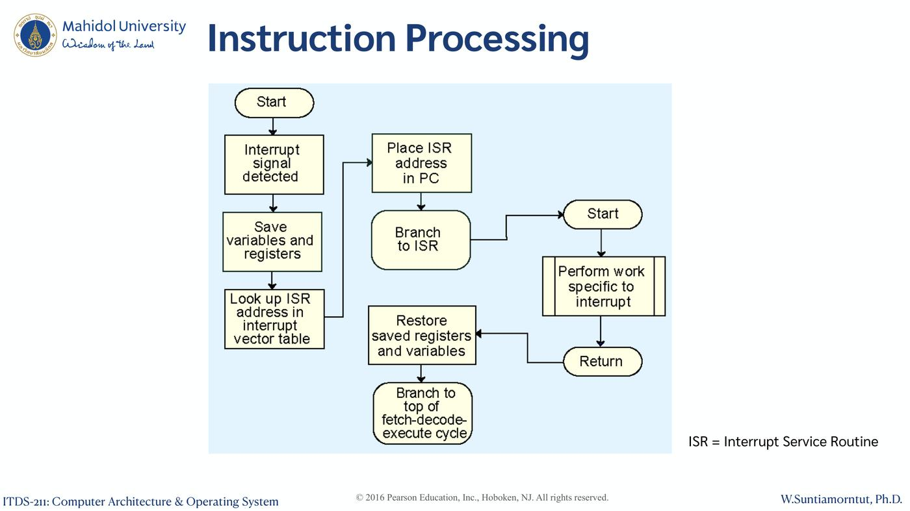
ISR = Interrupt Service Routine
- Interrupt signal detected
- Save variables and registers (เก็บสถานะโปรแกรมเดิม)
- Look up ISR address in interrupt vector table
- Place ISR address in PC
- Branch to ISR → ISR: Start → Perform work specific to interrupt → Return
- Restore saved registers and variables
- Branch to top of fetch-decode-execute cycle
💡 Interrupt vector table = สมุดโทรศัพท์ที่บอกว่า interrupt แต่ละชนิดต้องไปเรียก ISR ที่ address ไหน
12.4 Maskable vs Nonmaskable
- ในระบบ general-purpose มัก ปิด interrupt ทั้งหมด ระหว่างประมวลผล interrupt
- ทำได้ด้วยการ ตั้งบิตใน flags register
- Maskable interrupts = interrupt ที่ ถูกเพิกเฉยได้ ในกรณีนี้
- Nonmaskable interrupts = interrupt ที่ ต้องประมวลผลเสมอ เพื่อให้ระบบ อยู่ในสภาพเสถียร
💡 maskable = สายเรียกเข้าที่กดปิดเสียงได้ตอนประชุม / nonmaskable = สัญญาณเตือนไฟไหม้ ปิดไม่ได้ (เช่น power failure)
13. MARIE I/O และ A Simple Program
13.1 I/O ของ MARIE
- Interrupt มีประโยชน์มากกับการทำ I/O
- แต่ interrupt-driven I/O ซับซ้อน และ อยู่นอกขอบเขต ของบทนี้
- MARIE ใช้ programmed I/O แบบดัดแปลง (เพราะเป็นระบบที่ง่ายที่สุด)
- output ทั้งหมดใส่ใน OutREG
- CPU คอยตรวจ (poll) InREG จนกว่าจะมี input แล้ว คัดลอกค่าลง AC
13.2 A Simple Program ⭐
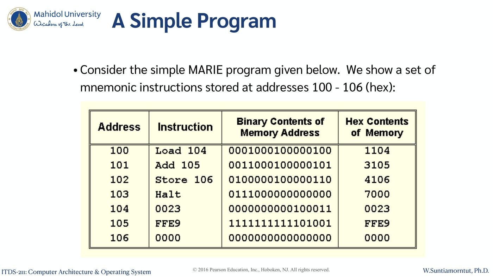
| Address | Instruction | Binary Contents of Memory Address | Hex Contents of Memory |
|---|---|---|---|
| 100 | Load 104 | 0001000100000100 | 1104 |
| 101 | Add 105 | 0011000100000101 | 3105 |
| 102 | Store 106 | 0100000100000110 | 4106 |
| 103 | Halt | 0111000000000000 | 7000 |
| 104 | 0023 | 0000000000100011 | 0023 |
| 105 | FFE9 | 1111111111101001 | FFE9 |
| 106 | 0000 | 0000000000000000 | 0000 |
โปรแกรมนี้ทำอะไร: โหลดค่าที่ 104 (0023₁₆ = 35) บวกกับค่าที่ 105 (FFE9₁₆ = −23 แบบ two's complement) แล้วเก็บผลที่ 106 → ผล = 000C₁₆ = 12
⚠️ Store 106 ในตารางเข้ารหัสเป็น 4106 ทั้งที่ตาราง opcode ให้ Store = 2 (และ 4 = Subt) — สไลด์พิมพ์ตามต้นฉบับหนังสือ ถ้าเจอข้อสอบให้ยึดตาราง opcode (ข้อสังเกตของผม)
13.3 การรัน ADD 105 ทีละขั้น
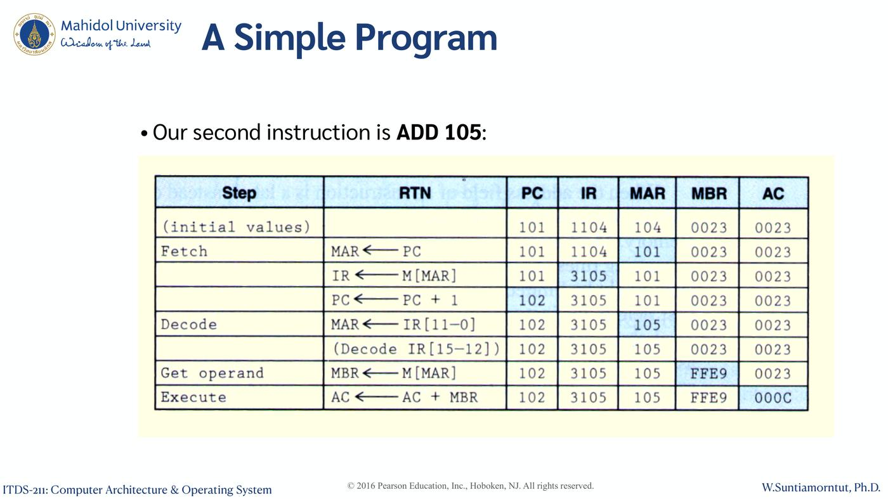
| Step | RTN | PC | IR | MAR | MBR | AC |
|---|---|---|---|---|---|---|
| (initial values) | 101 | 1104 | 104 | 0023 | 0023 | |
| Fetch | MAR ← PC | 101 | 1104 | 101 | 0023 | 0023 |
| IR ← M[MAR] | 101 | 3105 | 101 | 0023 | 0023 | |
| PC ← PC + 1 | 102 | 3105 | 101 | 0023 | 0023 | |
| Decode | MAR ← IR[11−0] | 102 | 3105 | 105 | 0023 | 0023 |
| (Decode IR[15−12]) | 102 | 3105 | 105 | 0023 | 0023 | |
| Get operand | MBR ← M[MAR] | 102 | 3105 | 105 | FFE9 | 0023 |
| Execute | AC ← AC + MBR | 102 | 3105 | 105 | FFE9 | 000C |
ค่าเริ่มต้น มาจากคำสั่งแรก (Load 104) ที่ทำเสร็จแล้ว คือ AC = 0023
14. Classes of Interrupts และการไหลของโปรแกรม
14.1 Classes of Interrupts
| Class | เกิดจาก |
|---|---|
| Program | เงื่อนไขที่เกิดจากการรันคำสั่ง เช่น arithmetic overflow, division by zero, พยายามรัน คำสั่งที่ไม่ถูกต้อง หรืออ้าง memory นอกพื้นที่ที่อนุญาต |
| Timer | timer ใน processor ช่วยให้ OS ทำงานบางอย่าง เป็นระยะ |
| I/O | I/O controller แจ้งว่า operation เสร็จปกติ, ขอบริการ จาก processor หรือแจ้ง error |
| Hardware failure | ความเสียหาย เช่น power failure หรือ memory parity error |
14.2 Program Flow of Control without and with Interrupt
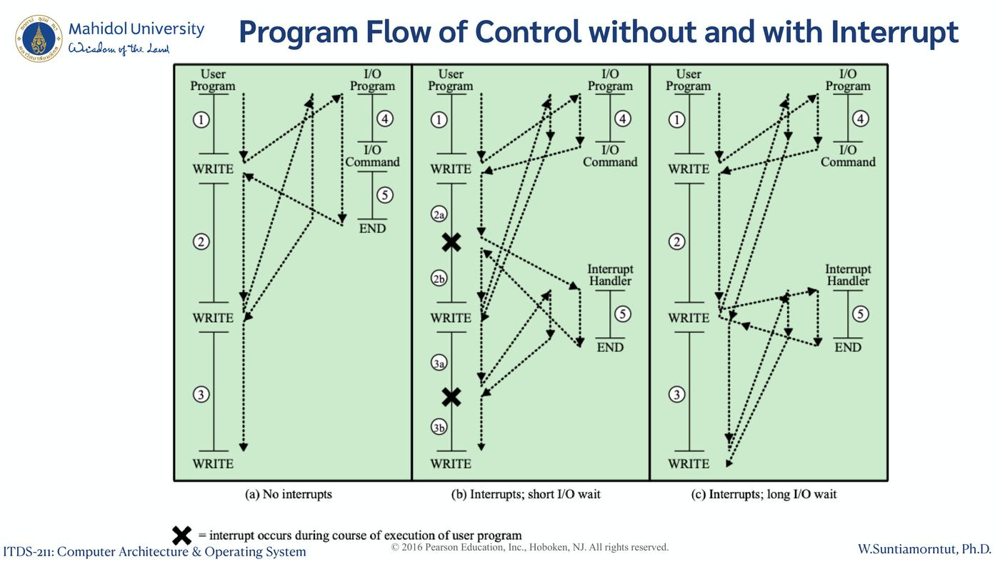
- (a) No interrupts: user program เรียก WRITE → I/O program ทำ I/O Command → CPU รอจน I/O จบ (END) → กลับมาทำโค้ดส่วนถัดไป
- (b) Interrupts; short I/O wait: หลังสั่ง I/O user program ทำงานต่อได้เลย เมื่อ I/O เสร็จจะ interrupt (✗) ไปที่ Interrupt Handler แล้วกลับมาทำต่อ
- (c) Interrupts; long I/O wait: I/O ครั้งแรกยังไม่เสร็จ แต่ user program ถึง WRITE ถัดไปแล้ว ต้อง รอ I/O ครั้งก่อน ก่อนจะสั่งครั้งใหม่
- ✗ = interrupt เกิดระหว่างที่ user program กำลังรัน
- ตัวเลข 1–5 ในภาพ = ส่วนของโค้ด: (1)(2)(3) โค้ดของ user program, (4) เตรียม I/O, (5) ทำงานหลัง I/O เสร็จ
14.3 Transfer of Control via Interrupts
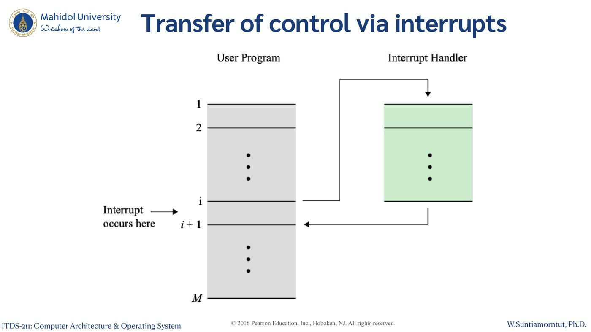
- user program รันคำสั่ง 1, 2, …, i
- Interrupt occurs here (หลังคำสั่ง i) → ย้ายไปรัน Interrupt Handler
- ทำ handler เสร็จ → กลับมาที่คำสั่ง i + 1
14.4 Instruction Cycle with Interrupts
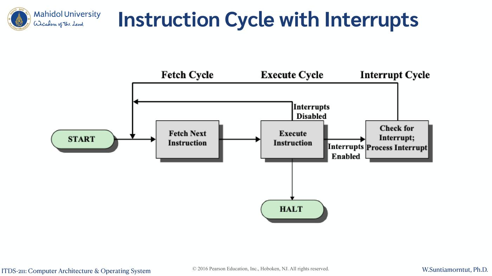
START → Fetch Cycle (Fetch Next Instruction) → Execute Cycle (Execute Instruction) → Interrupt Cycle (Check for Interrupt; Process Interrupt) → วนกลับ … → HALT
- Interrupts Disabled: จาก Execute ข้ามกลับไป Fetch ได้เลย ไม่ตรวจ interrupt
- Interrupts Enabled: ต้องผ่าน Interrupt Cycle ก่อน
14.5 Program Timing
Short I/O wait
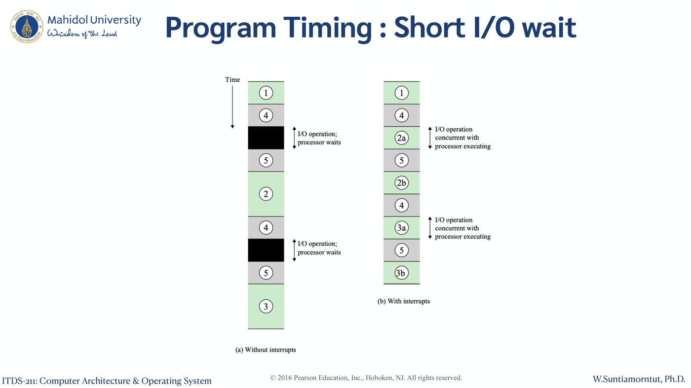
- (a) Without interrupts: มีช่วงสีดำ = "I/O operation; processor waits" CPU นั่งรอเปล่า
- (b) With interrupts: ช่วงเดียวกันกลายเป็น "I/O operation concurrent with processor executing" CPU ทำส่วน 2a, 2b, 3a, 3b ไปพร้อมกัน → เสร็จเร็วกว่า
Long I/O wait
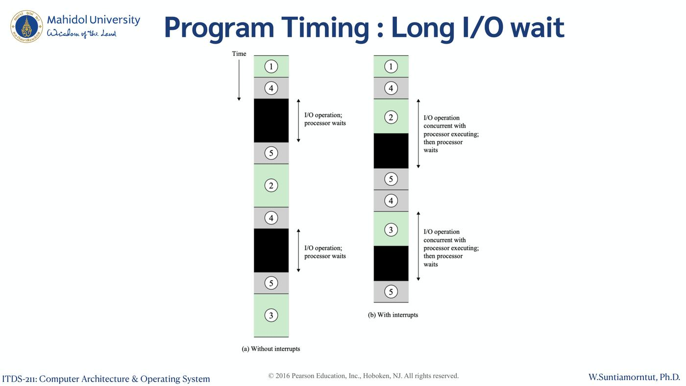
- (a) Without interrupts: รอ I/O นาน 2 ช่วงเต็ม
- (b) With interrupts: ช่วงแรก CPU ทำงานไปพร้อม I/O แต่ I/O นานกว่างานที่ CPU มี จึงยังต้องรอบางส่วน ("I/O operation concurrent with processor executing; then processor waits") → ยังเร็วกว่าแบบไม่มี interrupt
💡 ทำไม interrupt ช่วยให้เร็วขึ้น? CPU ไม่ต้องนั่งรอ I/O ที่ช้า ทำงานอื่นไปก่อน I/O เสร็จเมื่อไหร่ค่อยเรียก
14.6 Instruction Cycle State Diagram, with interrupts
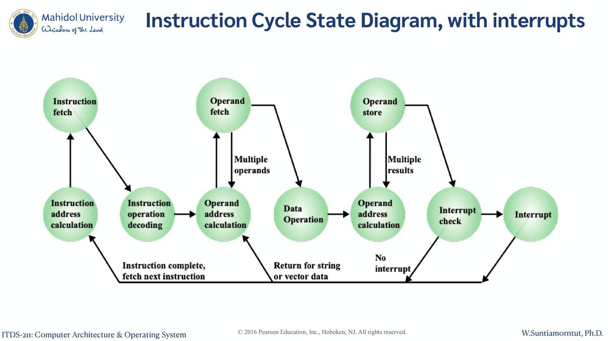
เหมือน state diagram ในหัวข้อ 7 แต่เพิ่ม:
- หลัง Operand store → Interrupt check
- No interrupt → กลับไป Instruction address calculation
- มี interrupt → Interrupt → แล้วกลับไป Instruction address calculation
15. Multiple Interrupts ⭐
15.1 Transfer of control with multiple interrupts
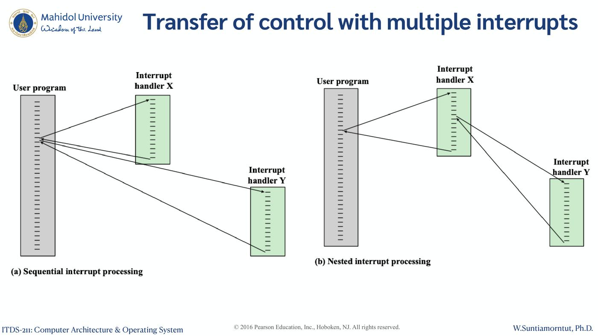
| (a) Sequential interrupt processing | (b) Nested interrupt processing |
|---|---|
| ขณะทำ handler X ปิด interrupt | ขณะทำ handler X เปิดให้ interrupt ที่ priority สูงกว่าเข้าได้ |
| interrupt Y ที่มาระหว่างนั้น ต้องรอ จน X จบ แล้วค่อยทำ Y | interrupt Y ขัด handler X ได้ทันที ทำ Y เสร็จแล้วกลับไปทำ X ต่อ |
| ง่าย แต่ไม่สนใจความเร่งด่วน | ตอบสนองงานเร่งด่วนได้ แต่ซับซ้อนกว่า |
15.2 Example Time Sequence of Multiple Interrupts
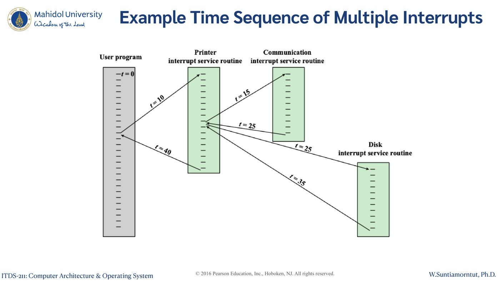
มี 3 ISR: Printer, Communication, Disk และ user program (ลำดับความสำคัญตามตัวอย่างในตำรา Stallings: communication สูงสุด, disk รองลงมา, printer ต่ำสุด — เสริม)
| เวลา | เหตุการณ์ |
|---|---|
| t = 0 | user program เริ่มรัน |
| t = 10 | printer interrupt → หยุด user program ไปทำ printer ISR |
| t = 15 | communication interrupt (priority สูงกว่า) → ขัด printer ISR ไปทำ communication ISR |
| (t = 20) | disk interrupt เข้ามา แต่ priority ต่ำกว่า communication จึงรอ (ตามตำรา) |
| t = 25 | communication ISR จบ → disk (priority สูงกว่า printer) ได้ทำ disk ISR |
| t = 35 | disk ISR จบ → กลับไปทำ printer ISR ที่ค้างไว้ |
| t = 40 | printer ISR จบ → กลับไป user program |
16. คำศัพท์สำคัญ
| คำศัพท์ | ความหมาย | จำง่าย ๆ ว่า |
|---|---|---|
| Von Neumann model | program + data อยู่ใน memory เดียว, stored program concept | ถนนเลนเดียว |
| Stored program concept | เก็บโปรแกรมไว้ใน memory เหมือนข้อมูล | เปลี่ยนงานได้ด้วยซอฟต์แวร์ |
| Harvard model | แยก memory/bus ของ instruction กับ data | สองถนน |
| Point-to-point / Multipoint bus | เชื่อม 2 อุปกรณ์ / หลายอุปกรณ์ใช้ร่วม | ทางส่วนตัว / ทางรวม |
| Data / Control / Address lines | ส่งข้อมูล / คุมทิศและเวลา / ระบุตำแหน่ง | อะไร / เมื่อไหร่ / ที่ไหน |
| Bus arbitration | ตัดสินว่าใครได้ใช้ bus | กรรมการ |
| Daisy chain / Centralized parallel | ส่งสิทธิ์ตาม priority / ต่อตรงกับวงจรตัดสิน | ส่งไมค์ / มีกรรมการกลาง |
| Self-detection / Collision-detection | ตกลงกันเอง / ลองส่งถ้าชนก็ลองใหม่ | |
| Instruction interpreter | ส่วนของ CPU ที่แปลคำสั่งเป็น control signals | ล่าม |
| MAR / MBR | address ที่จะอ่านเขียน / ข้อมูลที่อ่านเขียน | ที่ไหน / อะไร |
| I/OAR / I/OBR | ระบุอุปกรณ์ I/O / ข้อมูลแลกกับ I/O | |
| PC / IR / AC | address คำสั่งถัดไป / คำสั่งปัจจุบัน / ที่เก็บผลชั่วคราว | |
| Fetch cycle / Execute cycle | ดึงคำสั่ง / ทำคำสั่ง | |
| Opcode / Address field | รหัสคำสั่ง / ตำแหน่ง operand | ทำอะไร / กับอะไร |
| MARIE | คอมพิวเตอร์จำลองแบบง่าย 16 บิต memory 4096 ช่อง | เครื่องฝึก |
| InREG / OutREG | register รับ input / ส่ง output (8 บิต) | |
| ISA | รูปแบบคำสั่ง + operation พื้นฐาน, interface HW/SW | |
| Skipcond | ข้ามคำสั่งถัดไปตามค่า AC (PC ← PC + 1) | |
| Microoperation | คำสั่งย่อยในแต่ละ instruction | ขั้นย่อย |
| RTL | ภาษาอธิบายการโอนข้อมูลระหว่าง register | M[X], ← |
| Programmed I/O (polling) | CPU คอยเช็ก InREG เอง | ถามซ้ำ ๆ |
| Interrupt | การขัดจังหวะ fetch-decode-execute | กริ่งเรียก |
| Hardware / Software interrupt | จากอุปกรณ์ / จากซอฟต์แวร์ (system call) | |
| ISR | Interrupt Service Routine | คนรับเรื่อง |
| Interrupt vector table | ตาราง address ของ ISR | สมุดเบอร์ |
| Maskable / Nonmaskable | ปิดได้ / ต้องทำเสมอ | ปิดเสียงได้ / สัญญาณไฟไหม้ |
| Program / Timer / I/O / Hardware failure interrupt | 4 classes of interrupts | |
| Sequential / Nested interrupt processing | ทำทีละตัว / ตัวสำคัญกว่าขัดได้ | ต่อคิว / แซงคิว |
17. สรุปท้ายบท / จุดที่มักออกสอบ
เรื่องที่ต้องจำ
- Von Neumann: stored program, memory รวม program+data, address ตามตำแหน่ง, sequential → มีคอขวด
- Harvard: แยก memory/bus สำหรับ instruction กับ data (DSP, microcontroller); hybrid = Harvard ที่ L1 cache, Von Neumann ที่ main memory
- Bus: point-to-point vs multipoint; data/control/address lines; arbitration 4 แบบ (daisy chain, centralized parallel, self-detection, collision-detection)
- Software approach: instruction interpreter สร้าง control signals แทนการ rewire
- MAR/MBR/I/OAR/I/OBR และหน้าที่
- Fetch: PC → ดึงคำสั่ง → PC+1 → โหลดลง IR → แปลและทำ
- ตัวอย่าง 300–302: 1940 (load 940), 5941 (add 941), 2941 (store 941) → 941 = 0005
- MARIE 7 registers และขนาด (AC 16, MAR 12, MBR 16, PC 12, InREG 8, OutREG 8)
- MARIE ISA 13 คำสั่ง, format = opcode 4 บิต + address 12 บิต, ตาราง 9 คำสั่งพื้นฐาน
- RTL: LOAD (MAR←X, MBR←M[MAR], AC←MBR), ADD (…, AC←AC+MBR), SKIPCOND (00: AC<0, 01: AC=0, 10/11: AC>0)
- Fetch-decode-execute flowchart: MAR←PC, IR←M[MAR], PC←PC+1, MAR←IR[11-0], (MBR←M[MAR]), execute
- Interrupts: เกิดจาก user break, I/O, critical error; hardware vs software; ISR, vector table; maskable vs nonmaskable
- Simple program 100–106: 0023 + FFE9 = 000C
- 4 classes of interrupts: program, timer, I/O, hardware failure
- Interrupt ทำให้ CPU ไม่ต้องรอ I/O (short vs long I/O wait)
- Sequential vs nested multiple interrupts และตัวอย่าง timeline t = 0, 10, 15, 25, 35, 40
คู่ที่มักสับสน
| คู่ | ต่างกันที่ |
|---|---|
| Von Neumann vs Harvard | memory รวม vs แยก |
| MAR vs MBR | address vs data |
| PC vs IR | ที่อยู่คำสั่งถัดไป vs คำสั่งที่กำลังรัน |
| LOAD vs ADD (RTL) | AC ← MBR vs AC ← AC + MBR |
| Hardware vs Software interrupt | จากอุปกรณ์ vs จาก system call |
| Maskable vs Nonmaskable | ปิดได้ vs ต้องทำเสมอ |
| Sequential vs Nested | ปิด interrupt ระหว่างทำ vs ให้ priority สูงกว่าขัดได้ |
| Programmed I/O vs Interrupt-driven I/O | CPU คอยถาม vs อุปกรณ์เรียกเอง |
โจทย์ที่ต้องทำได้
- แปลง hex เป็นคำสั่ง: ตัวแรก = opcode, 3 ตัวหลัง = address (เช่น 3105 = Add 105)
- Trace ตาราง register (PC, IR, MAR, MBR, AC) ของคำสั่งหนึ่งคำสั่ง
- อ่าน bit pattern SKIPCOND: opcode 8 แล้วดูบิต 11–10
- อธิบายลำดับ multiple interrupts ตาม priority